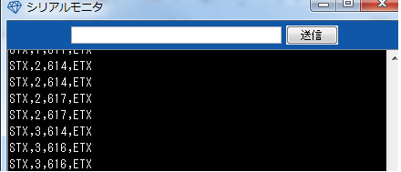
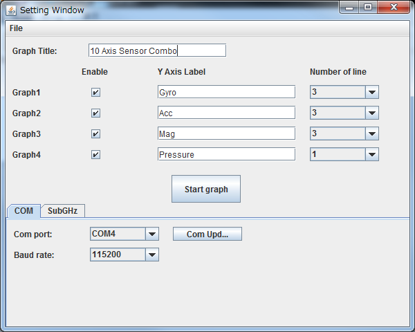

概要
LazuriteGraphは特定の書式で受信したデータをグラフ表示するソフトウエアです。
書式は次の通り
STX,data[0],data[1],data[2]..... ,data[n],ENX
条件：
1. STXで始まること
2. カンマ区切りの数値文字列でデータを送信すること
3. 表示に必要なデータの数がそろっていること
4. 一回に表示するデータは改行で終わること
5. 改行前の最後の文字列はETXであること
サンプル:
これらの条件を満たすシリアル出力の結果はこのような文字列となります。


設定画面：
| Graph Title | グラフのタイトルを設定します。 |
| Enable | グラフの表示可否を設定します。最大で4つのグラフまで表示することができます。 |
| Number of line | 1つのグラフに表示する軸の数を指定します。たとえば、3軸加速度などの場合は3に、温度のように1つのデータしかないときは1にしてください。 |
| Y Axis Label | 各グラフのY軸のラベルを設定します。 |
| COMタブ | 現状はCOMポートのみ対応しています。 |
| SubGHzタブ | Windows版は非対応です。Linux版では使用できます。 |
| Com port | Lazuriteが接続されているCOMポートを指定してください。 |
| Baud rate | シリアルのボーレート(通信速度)を指定してください。 |
ソースコードはこちらからダウンロード可能です。